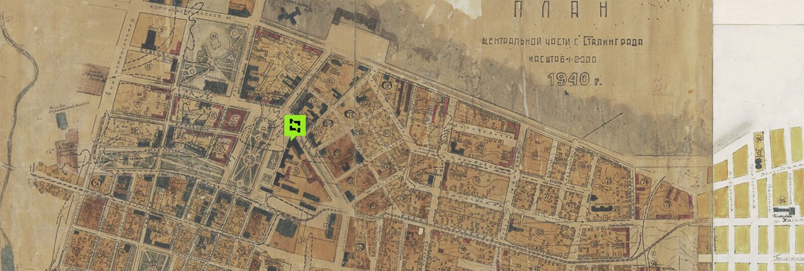
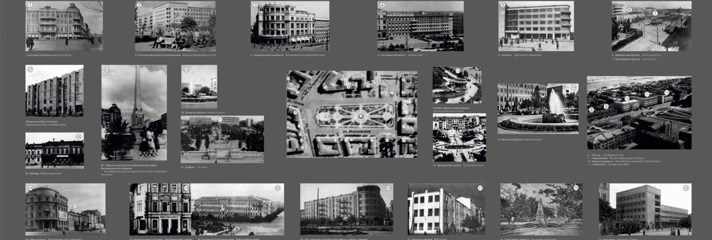
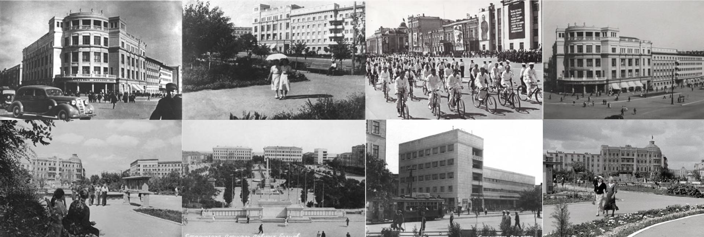

Пароль победы «Сталинград»
Проекционный панорамный зал
Цель проекта
Популяризация объекта культурного наследия федерального значения и достоверный рассказ о Сталинградской битве 1942–1943 гг. — как инструмент патриотического воспитания и сохранения исторической памяти.
Решение
Полное погружение за счёт света, звука и исторической реконструкции: проекция воссоздаёт довоенный Сталинград и переносит зрителя в события битвы. Тихое, но сильное пространство, где историю своего города проживаешь, а не читаешь. После открытия посещаемость музея выросла вдвое.
Проект посвящён заключительному этапу Сталинградской битвы — пленению штаба 6-й полевой немецкой армии в здании Центрального городского универмага. Проект воссоздаёт атмосферу событий на площади Павших Борцов в Сталинграде 1942–1943 гг., ставшей одним из эпицентров крупнейшего сражения на Волге.
Проект реализован в 4 этапа
- Разработка концепции проекта
- Выигрыш президентского гранта
- Реализация контента, закупка оборудования
- Монтаж оборудования и ввод в эксплуатацию



Полная версия проекционного контента
Направление: Концепция музея
Открыть интерактивную версию →